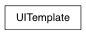

from pymel.core import *
# force deletes the template if it already exists template = ui.UITemplate( ‘ExampleTemplate’, force=True )
template.define( button, width=100, height=40, align=’left’ ) template.define( frameLayout, borderVisible=True, labelVisible=False )
# Create a window and apply the template. # with window():
- with template:
- with columnLayout( rowSpacing=5 ):
- with frameLayout():
- with columnLayout():
- button( label=’One’ ) button( label=’Two’ ) button( label=’Three’ )
- with frameLayout():
- with columnLayout():
- button( label=’Red’ ) button( label=’Green’ ) button( label=’Blue’ )